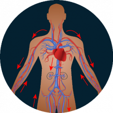

En 28 días limpiará las arterias y limpiará la circulación sanguínea ordinaria – el efecto ha sido confirmado por las investigaciones médicas independientes.

Hola,
Soy profesor Per-Olof Sandström – investigador, experto en biología molecular. En esta página desearía presentar el éxito más importante de mi vida por el cual ya recibí una decena de galardones de prestigio , así mismo, un premio de la Sociedad Mundial de lucha contra la ateroesclerosis. Desarrollé un método que le permite a cada uno de forma natural, segura y económica limpiar las arterias de las placas de ateroesclerosis, el colesterol y los sedimentos de toxinas y de esta forma recuperar la circulación de sangre normal y reducir el riesgo de ataque cardíaco un 185% y de ictus, un 168%. Desarrollé un método que le permite a cada uno de forma natural, segura y económica limpiar las arterias de las placas de ateroesclerosis, el colesterol y los sedimentos de toxinas, y como resultado, se recupera la circulación de sangre normal y se reduce el riesgo de ataque cardíaco un 185% y de ictus, un 168%. ¡Y todo esto en 28 días!
Por lo tanto, si Vd. lo desea, es posible:
-
quitar un 99,7% de placas ateroescleróticas, colesterol y sedimentos de toxinas
- en 28 días;
-
recuperar el 100% del flujo de sangre natural de arterias y llenar con oxígeno cada célula del cuerpo;
-
reducir el riesgo de infarto un 185% y de ictus un 168%;
-
una vez y para siempre quitar la sensación de frío en los pies y en las manos y olvidarse del dolor en el pecho;
-
curar un 98,9% de varices feas y dolorosas;
-
recuperar completamente las fuerzas vitales como si tuviera 20-25 años de edad;
-
y gracias a eso ¡volver a disfrutar de la vida!
No importa cuántos años tiene y durante cuánto tiempo padece de problemas de circulación sanguínea. No importa si la etapa de Su problema es inicial o ya tiene consecuencias importantes. Hasta si el médico le dice que no hay esperanza ninguna de mejora... Debe saber que en 28 días podrá recuperar un 100% del flujo sanguíneo de cada arteria por separado. ¡Sin bisturí, procedimientos químicos nocivos, sin cambiar su modo de vida!
Es por eso que mi método es una alternativa perfecta a los modos tradicionales de afrontar la insuficiencia cardiovascular:
-
fue desarrollado solo usando los ingredientes activos naturales – y gracias a eso no irrita el estómago ni provoca los efectos secundarios;
-
no requiere cumplir con ninguna dieta ni actividad física aumentada – si desea practicar deporte o restringir el consumo de algunos alimentos, lo puede hacer, pero no es nada obligatorio;
-
permite ahorrar miles de Euros, en vez de gastarlos en pastillas llenas de sustancias químicas o fármacos no eficaces.
He desarrollado un método natural que limpia las arterias de placas ateroescleróticas, colesterol y toxinas y recupera su capacidad a 100%.
Gracias al mismo, Vd. podrá prevenir un ataque cardíaco o un ictus, y también protegerá Sus venas contra ateroesclerosis... Olvidará todos los problemas que le molestan a causa de la mala circulación sanguínea. Dejará de estar cansado durante los ejercicios más sencillos y podrá curar la disnea.
¡Por fin sentirá Su estado físico real y podrá respirar profundamente!
Los paseos más largos dejarán de ser un problema y serán un placer. Desaparecerá un dolor molesto del pecho, el calambre constante y el entumecimiento en las manos y pies. Y todo eso gracias a poder desarrollar una fórmula que disuelve un 99,7% de las placas ateroescleróticas,, sedimentos de colesterol y toxinas que imposibilitan el flujo sanguíneo correcto. Gracias a eso se recupera el 100% del flujo sanguíneo natural de venas y permite nutrir cada célula del cuerpo. El efecto es que el riesgo del ataque cardíaco se reduce un 185%, y del ictus un 168%, así mismo, mi método protege las venas contra la ateroesclerosis. ¡Y todo eso solo en 28 días! ¿Cómo lo conseguí?
Quería que mi mujer no tuviera más miedo al ataque cardíaco.
Según las últimas encuestas, cada quinto residente de Suecia sufre insuficiencia de circulación sanguínea de alguna forma. Estas personas normalmente no saben que en su cuerpo hay una bomba de relojería que puede estallarse en cualquier momento. Ignoran
El cansancio, el dolor y la disnea y creen que es normal, que eso pasa con la edad. Pro en realidad los problemas de circulación sanguínea son una enfermedad importante que, en caso de ser ignorada, puede provocar consecuencias trágicas (un ataque cardíaco, un ictus, ateroesclerosis crónica de extremidades inferiores). Un ataque cardíaco es una señal de alerta importante. Normalmente sobreviven solo un 50% de las personas que se ponen enfermas. Lamentablemente, lo mismo le paso a mi mujer Daniela, una mujer de 48 años de edad que no debe ni fuma ni se alimenta mal. Al principio se quejaba solo de calambre en los músculos de pantorillas y los pies fríos. A veces tenía disnea. Pensé que no era nada especial. Pero luego todo solo empeoró...
Daniela siempre ha sido una mujer muy activa. Nos reíamos de que se cansaba más de no hacer nada. Nos gustaba montar la bici juntos, correr o solamente pasear por el bosque...Con el tiempo mi mujer empezó a cansarse más rápido y tenía que parar después de varios pasos para respirar. Por fin, hizo las pruebas que revelaron ateroesclerosis aguda de arterias coronares. El médico le recetó muchas pastillas y aconsejó no cansarse mucho, Las bicicletas empezaron a cubrirse de polvo en el garaje y dejé de reconocer a mi mujer. El hecho de permanecer inmóvil le cansaba y dejó de cuidarse de sí misma. Le pido disculpas, pero tuve la sensación de que cada día se rendía más y más...
¡Esto era peligroso para su vida!
Pero lo más peligroso pasó el día que cumplió 50 años. Cuando abrí la puerta con la tarta en una mano y las flores en la otra, sentí que algo no estaba bien. El silencio absoluto en casa lo interrumpía solo el perro. Corrí a la cocina donde estaba tumbada Daniela apretando su pecho donde estaba el corazón. Resultó que había tenido un ataque cardíaco. Tuve mucha suerte porque en caso de haber llegado unos minutos más tarde. probablemente no habría encontrado viva a mi mujer.
No me lo pude creer. Toda la vida pensaba que la vida sana, la alimentación sana y los ejercicios me protegerían a mí y a mis próximos contra los problemas de circulación sanguínea. Aquel ataque cardíaco me pareció algo imposible. Pero no llevaba razón… Sabía que tenía poco tiempo. Solo un 50% de personas sobreviven el segundo infarto y solo un 3% - el tercero.
¿Cómo inventé un «antídoto contra los problemas de circulación sanguínea»?
Tuve que ayudarle a mi mujer a curar la ateroesclerosis y protegerla contra la muerte segura. Quería que ella dejara de vivir con miedo constante y por fin pudiera recuperar su salud. Entonces pensé para mí mismo: «¡Eres un investigado! Entiendes de biología y químicas. Ya has desarrollado múltiples remedios contra varias enfermedades. ¡Invente algo para los problemas de circulación sanguínea!» Y luego empecé a buscar la solución del problema...
Durante el año realicé las investigaciones de laboratorio intensivos. Hice pruebas de varias mezclas de ingredientes con participación de mi mujer. Confirmo que todas eran naturales a 100% y seguras para el cuerpo. El conocimiento científico y un poco de suerte me permitieron avanzar un poco – desarrollé una formula única para el sistema cardiovascular. Enseguida lo informé a las instituciones de sanidad. Su eficacia ha sido confirmada a 98% por los centros de investigación más importantes de Europa y EE.UU.
Ya durante las pruebas mi fórmula de forma natural curó a centenares de voluntarios de problemas circulación sanguínea.
Mi mujer ya después de la primera semana de aplicación de esta fórmula dejó de sentir cansancio constante y se curó de calambre en tibiotarsiana. Estaba contenta porque ya no tenía que ponerse tres pares de calcetines gruesos en la cama porque sus pies ya no se enfriaban. Y esto solo era un inicio. La semana siguiente ella sintió cada vez más energía y ya no podía quedarse tumbada. Una vez, cuando no la encontré en casa, me asusté. Busqué en el garaje, y allí ya no estaba la bicicleta. Al volverse de su viaje largo, ella dijo, contenta: «Per-Olof, me siento como si hubiera vuelto a nacer. Como si estas dificultades con ateroesclerosis hubiera sido una pesadilla. Inventaste un antídoto contra los problemas de circulación sanguínea. ¡Piensa a cuánta gente puede ayudar eso! Muchas gracias a ti. "

Daniela se curó de ateroesclerosis, y otra vez tuvo energía e interés por la vida.
Gracias a mi fórmula cardiovascular Vd. puede no solamente deshacerse de problemas de circulación sanguínea, sino también prevenir su aparición en el futuro.
Permítame explicar brevemente cómo surgen los problemas de circulación. Este proceso es muy complicado, pero intentaré explicarlo en un lenguaje que cada uno entienda.
Las arterias parecen a canales gracias a los cuales la sangre entrega las sustancias nutritivas importantes a todas las células de Su cuerpo.
Cuando estos canales están obstruidos, "las partes del cuerpo” no reciben energía ni sustancias nutritivas y literalmente mueren.
Esto sucede cuando por varios factores las venas se obstruyen o se dañan. ¿Cómo sucede eso? Hasta un pequeño daño en la pared de la vena puede convertirse en un coagulo de sangre – es decir, una placa ateroesclerótica. Con el tiempo, aparecen más placas, y se añade el colesterol. Es parecido a pegamento que intenta curar una inflamación en nuestro cuerpo y toda la micro úlcera. Pero en vez de eso, obstruye las venas aún más. Como resultado, la sangre se mueve cada vez menos y deja de suministrar el oxígeno de importancia vital y las sustancias nutritivas a todos los órganos.
Todo el sistema se vuelve inestable. Pero lo peor es que las placas ateroescleróticas que cubren las paredes de las venas parecen a la bomba de relojería. Si la vena se bloquea un 100%, esto provoca un ataque cardíaco. Si un coágulo grande que consiste en colesterol se desprende (por ejemplo, por estrés), puede llegar al cerebro y provocar un ictus.
Por lo tanto, tuve una tarea de crear una fórmula que tendría un efecto radical: limpiará las venas, regenerará y fortalecerá sus paredes y las protegerá contra el daño posterior en el futuro. Lo logré. Desarrollé una fórmula cardiovascular que limpia y regenera. La llamé Cardiofort.
¿Por qué mi fórmula cardiovascular fue llamada “un antídoto milagroso contra los problemas de circulación sanguínea”?
TIENE EFICACIA SUPERIOR A 98% PARA LIMPIAR Y REGENERAR LOS VASOS SANGUÍNEOS
Las arterias obstruidas y dañadas que impiden la circulación sanguínea normal
Las arterias limpias y regeneradas – la circulación de sangre correcta en todo el cuerpo
Hasta ahora esto parecía un milagro. Pero es un hecho que se confirma con el caso de mi mujer y 14000 personas más que ya quitaron los problemas de circulación sanguínea gracias a mi método. Además, la eficacia de esta fórmula sin ninguna duda fue comprobada por el Centro de Investigación británico en Liverpool. Es un descubrimiento universal comprobado por los cardiólogos más importantes.
ES 100% SEGURO Y FÁCIL DE USAR

Los ingredientes naturales provocan milagros – la humanidad recopiló bastante conocimiento científico para crear el contenido ideal. Es un lema que seguí al crear la fórmula que limpia las arterias. Este fármaco contiene solo las sustancias naturales, seguras y super eficaces. Las preparé en gotas fáciles de tomar, para que cada uno pudiera curarse en casa sin ayuda. Basta con tomar 60 gotas dos veces al día para curarse una vez y para siempre de los problemas de circulación sanguínea en 28 días. Sin efectos secundarios y sin dañar el sistema de digestión.
19 personas compraron hoy
¡Vd. recuperará Su cuerpo esbelto, olvidará el dolor y estará orgulloso por su energía y fuerza!

MEJOR CIRCULACIÓN SANGUÍNEA

¿Cómo pude Vd. evitar la posibilidad de curarse de los problemas de circulación sanguíneas?
Vd. puede seguir sufriendo de calambre, varices y la sensación de frío en las manos y en los pies. Vd. puede seguir sufriendo de disnea, la sensación de cansancio constante y dolor en el pecho y no tomar en serio el riesgo vinculado a todo esto... Pero ¿por qué, cuando le garantizo un modo natural, fácil y económico de deshacerse una vez y para siempre de los problemas de circulación sanguínea, Vd. no intenta curarse? Basta con solo 28 días de tratamiento para que Vd. se convierta en uno de los 14 000 usuarios contentos de Cardiofort que ya se olvidaron del cansancio, disnea y varices y recuperaron su estado anterior a 100%.
¡Vd. no corre ningún riesgo!
En caso de usar Cardiofort, limpiará las arterias durante 28 días. Además, Vd. no corre ningún riesgo. Como solución exitosa de problemas a nivel mundial, mi fórmula tuvo la garantía importante de triple satisfacción: originalidad, calidad y curación completa.
Garantía de triple satisfacción
-
Garantía de originalidad – en la fórmula que ayuda a la circulación sanguínea cardiovascular. Cardiofort contiene una fórmula a base de sustancias muy fuertes que limpian las venas y fortalecen sus paredes. Su eficacia para quitar las placas ateroescleróticas fue confirmada por las investigaciones clínicas. Es la única fórmula tan innovadora. De esta forma, Vd. puede estar seguro de recibir un producto original disponible solo en esta página.
-
Garantía de calidad – Gracias al proceso de producción avanzado, Cardiofort corresponde a los estándares de calidad más altas. En función de Su salud y bienestar, la concentración de las sustancias activas fue elegida para que el tratamiento fuera totalmente seguro. Todo está hecho para que su resultado cumpla con Sus expectativas un 100%.
-
Garantía de eficacia – múltiples tests de laboratorio y consumidor confirman la alta eficacia de Cardiofort. A base de estos resultados, el fármaco fue confirmado por los expertos en todo el mundo que lo recomiendan a todos los que les piden ayuda. Están seguros de que en 28 días Vd. limpiará las ventas y posteriormente bloqueará la aparición de las placas ateroescleróticas.
Limpie las arterias en 28 días con Cardiofort de forma natural, económica y sencilla.
Las grandes empresas farmacéuticas de EE.UU. y Japón literalmente luchan por mi fórmula cardiovascular. Cuando venda el patente, el tratamiento estará disponible a todo el mundo, pero será muy caro.
Antes de todo esto, decidí hacerlo disponible en Europa para participar en un club de descuentos – los descuentos de 50% permiten adquirirlo más barato. Todo eso para ayudar a recuperar la circulación sanguínea normal para muchas personas no solo en mi país, sino en toda Europa.
Por lo tanto, le recomiendo usar esta posibilidad. Es muy fácil hacer un pedido en el club de descuentos. No necesita enviar dinero por Internet ni pagar con tarjeta para adquirir
Cardiofort.
Basta con rellenar el formulario en 2 minutos y ya en un par de días Vd. recibirá un paquete, y es fácil pagarlo al mensajero.
Gracias por encontrar el tiempo para leer mi mensaje. Le deseo mucha suerte an su nueva vida, libre de problemas con circulación sanguínea, así como de miedo al ataque cardíaco, ictus y ateroesclerosis. En 28 días se olvidará de haberse preocupado por este problema.
Profesor Per-Olof Sandström